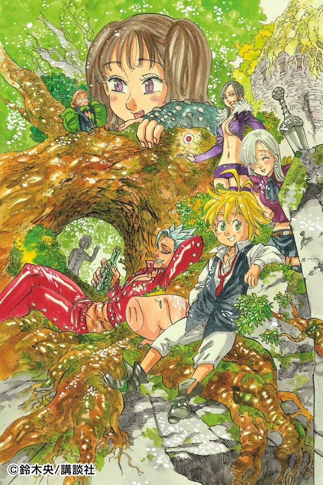
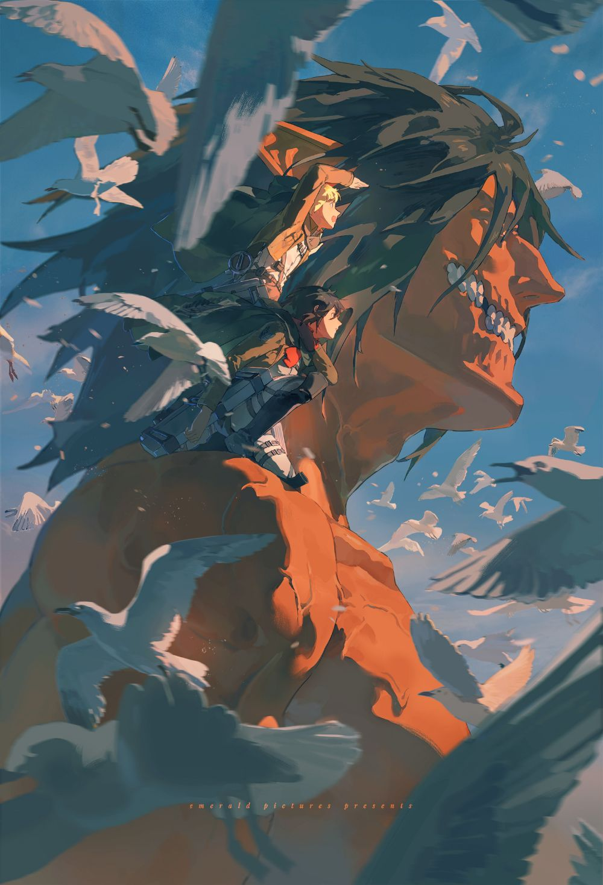
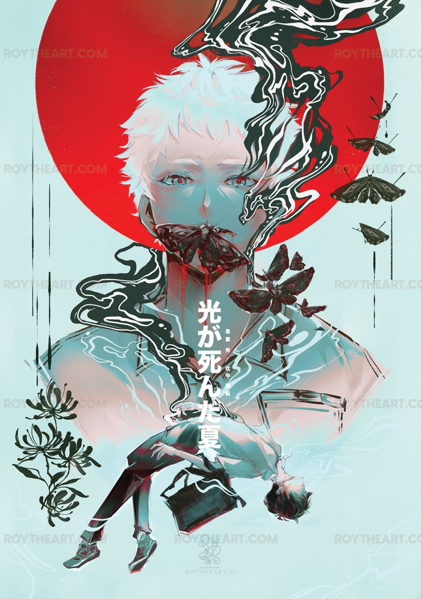
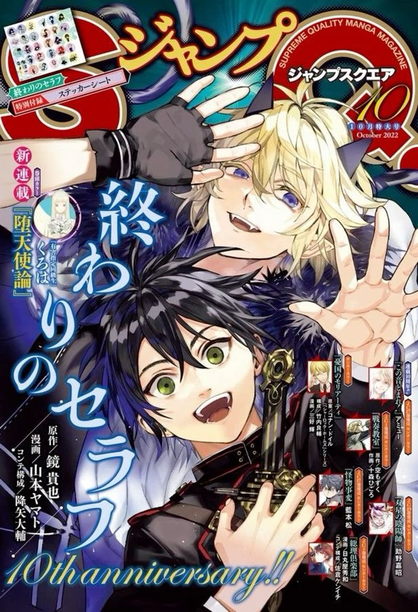
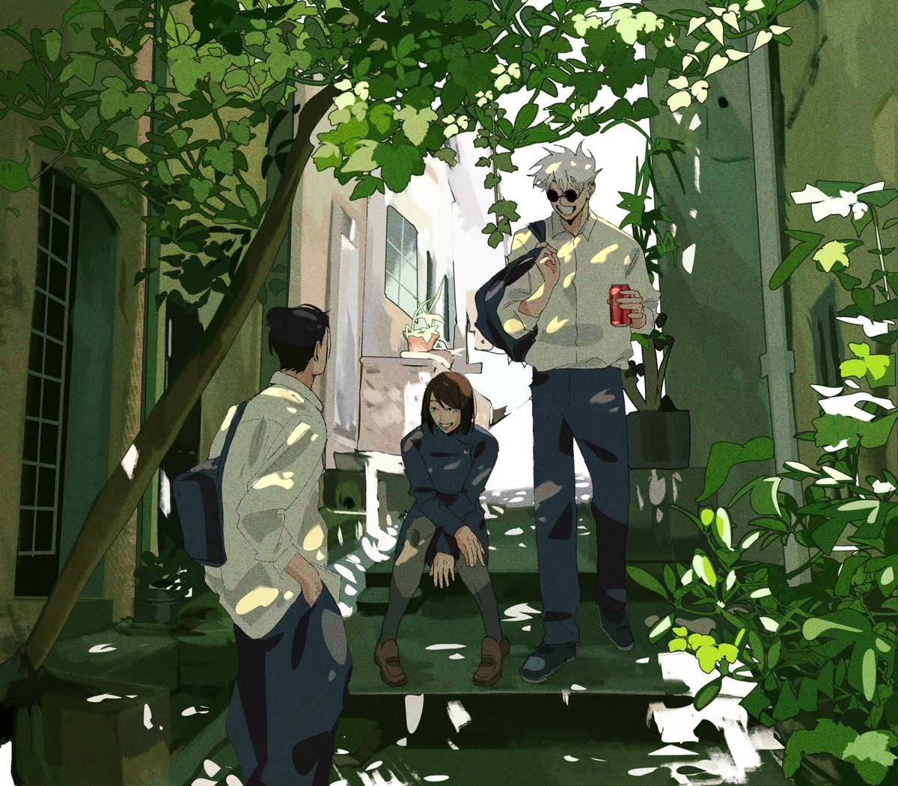

Top 5 animes favoritos
Los 7 pecados capitales
Un grupo de caballeros legendarios con poderes únicos lucha para salvar su reino.

Shingeki no Kyojin
Un grupo de personas lucha contra gigantes para proteger su reino.

El verano que murió Hikaru
Un grupo de personas lucha contra gigantes para proteger su reino.

Seraph on the end
Un joven se une a un grupo de vampiros para vengar la muerte de su familia.

Jujutsu Kaisen
Un joven psíquico lucha por controlar sus poderes mientras enfrenta desafíos sobrenaturales.
